Официальные обращения
Фиксируем системные вопросы автотуристов, определяем компетентный государственный орган и направляем аргументированный запрос с предлагаемым решением.
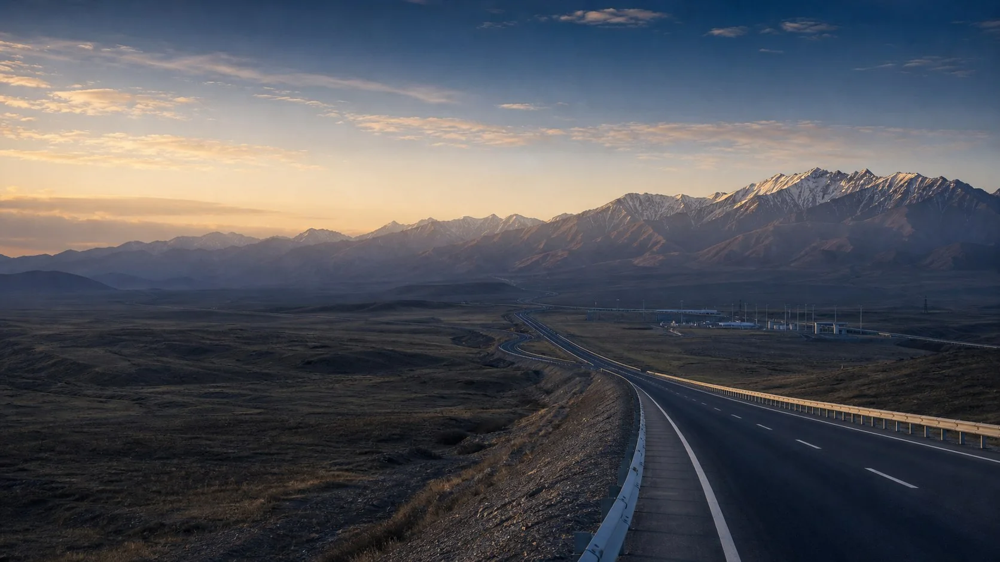
Kazakhstan · Since 2002
Развиваем Автотуризм в Казахстане, взаимодействуя между представителями автотуристических организаций, государственных органов и других заинтересованных сторон для решения общих задач и создания глобальной сети автомобильного туризма.
About IFA
IFA — общественный фонд/некоммерческая организация, деятельность которой официально согласована и зарегистрирована Министерством юстиции Республики Казахстан в 2002 году. В соответствии с Уставом Федерация осуществляет деятельность в сфере развития автотуризма, а также оформления и выдачи международных водительских удостоверений.
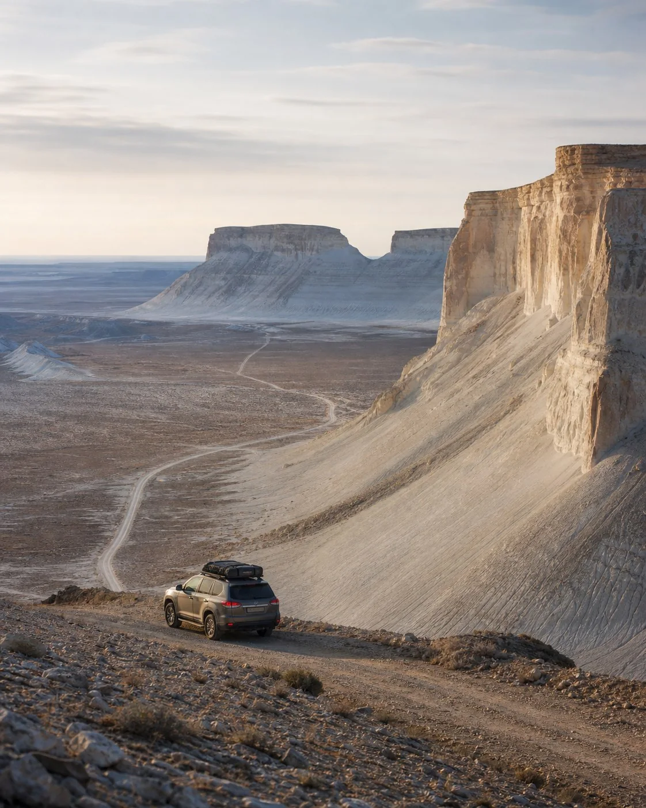
Государственно-экспертное взаимодействие
IFA взаимодействует с государственными структурами и отраслевыми организациями по вопросам автомобильной мобильности, водительских документов, пограничных процедур, дорожной безопасности и сервисной инфраструктуры. Федерация консолидирует обращения, готовит официальные запросы и предложения и сопровождает вопросы до получения позиции компетентного органа.
О нас→Фиксируем системные вопросы автотуристов, определяем компетентный государственный орган и направляем аргументированный запрос с предлагаемым решением.
Взаимодействуем с уполномоченными подразделениями дорожной и административной полиции по вопросам правил движения, безопасности маршрутов и информирования водителей.
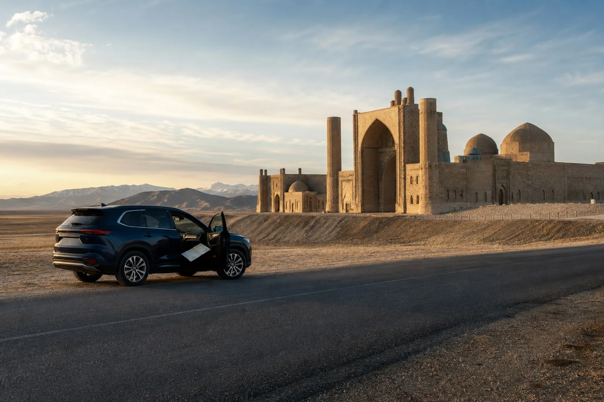
Систематизируем вопросы пересечения границы, временного ввоза автомобиля и требований к документам для обращения в органы государственных доходов и пограничного контроля.
Анализируем практику применения правил, собираем позиции участников отрасли и готовим предложения по устранению административных барьеров для автотуризма.
Выносим на рассмотрение вопросы навигации, сервисных точек, остановок, экстренной помощи и доступности маршрутов, добиваясь их включения в рабочую повестку.
IFA Route Development
Международные автомаршруты IFA с расчётной протяжённостью, временем в пути и рекомендуемым сезоном автомобильного путешествия.
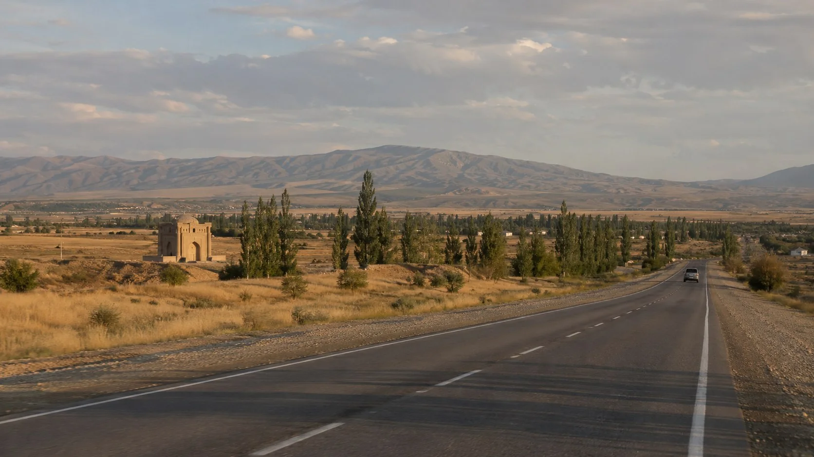
ROUTE CONCEPT
Алматы · Тараз · Шымкент · Ташкент · Самарканд
Концепция культурно-исторического путешествия через юг Казахстана к ключевым центрам Центральной Азии.
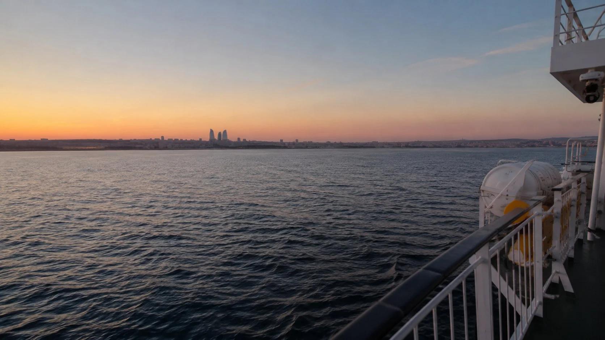
ROUTE CONCEPT
Астана · Актау · Баку · Тбилиси
Перспективная мультимодальная концепция через Каспий с дальнейшим выходом к Кавказу.
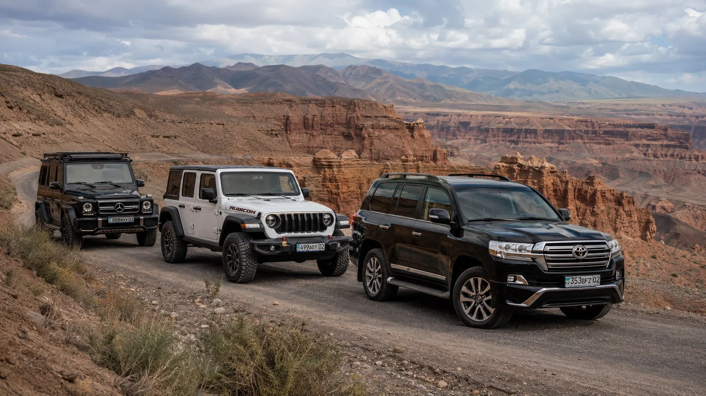
ROUTE CONCEPT
Алматы · Чарын · Каракол · Бишкек · Алматы
Концепция высокогорного круга для подготовленных самостоятельных путешествий и будущих клубных программ.
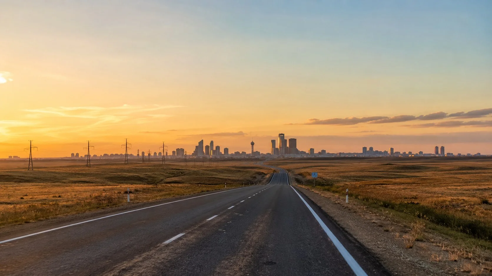
ROUTE CONCEPT
Астана · Костанай · Оренбург · Казань
Перспективное северо-западное направление между Казахстаном и крупными евразийскими городами.
History & continuity
IFA учреждена в Казахстане. Устав определил долгосрочный мандат Федерации в сфере автомобильного туризма.
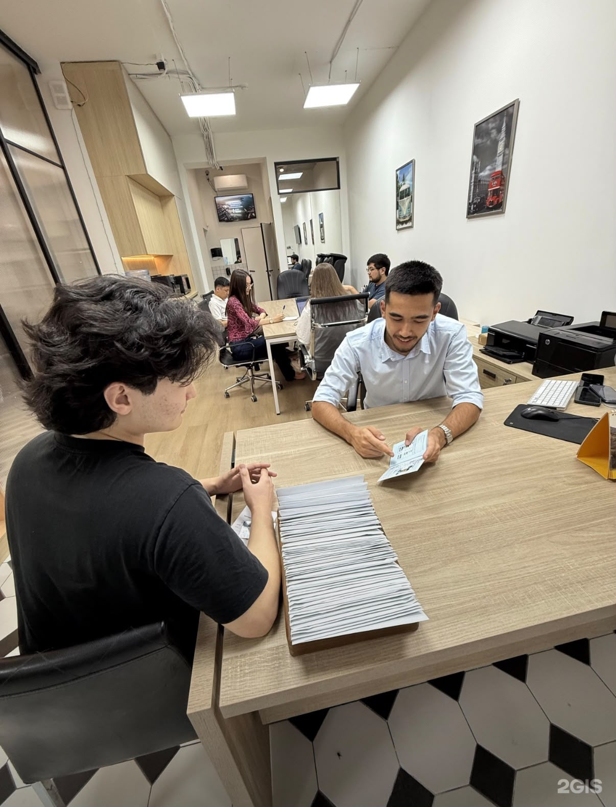
Практическая работа с международными водительскими документами выстраивается через аккредитованного партнёра.
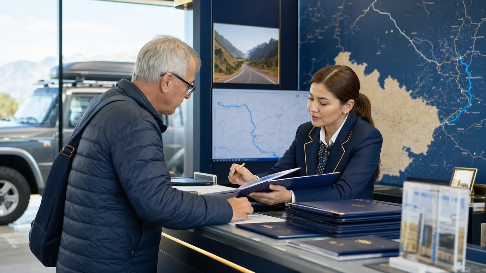
Партнёрская инфраструктура поддерживает документальную и информационную работу для международных водителей.
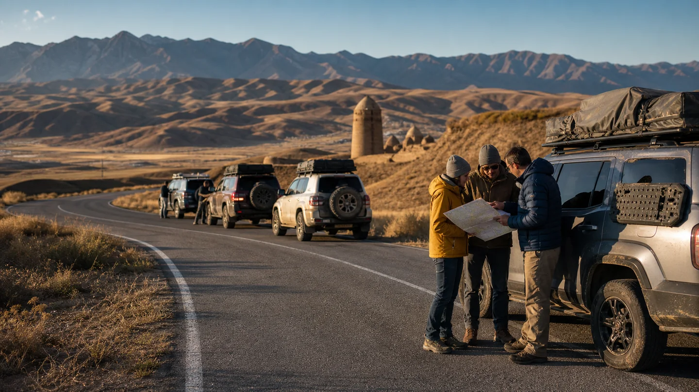
20–27 апреля представители IDA участвовали в экспедиции «Легенды Юга» в рамках сотрудничества с Nomad Explorer. Маршрут прошёл по Жамбылской и Туркестанской областям. Организатором выступила команда Nomad Explorer Маргулана Сейсембаева; в истории IFA эпизод отмечен как опыт партнёрской сети, без заявления организаторской роли.
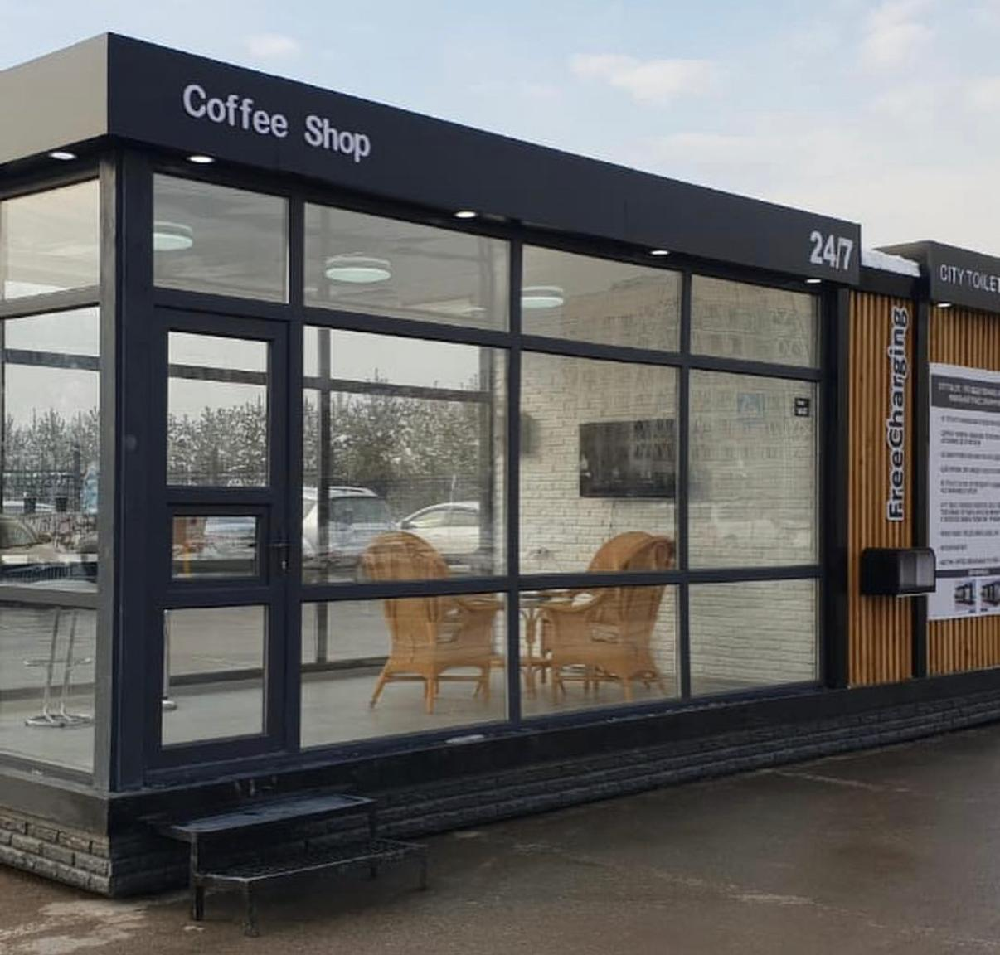
Учредители IFA выступали авторами и инициаторами ряда проектов в сфере благоустройства и развития общественных пространств, реализованных совместно с местными исполнительными органами Республики Казахстан. Проекты были направлены на создание комфортной городской среды, модернизацию общественных зон и повышение качества городской инфраструктуры.
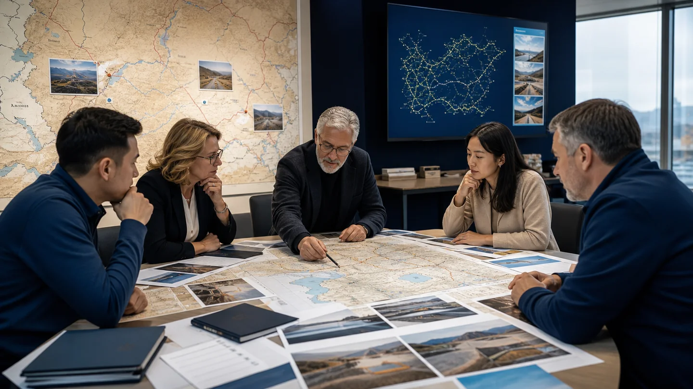
Формируются маршрутный портфель, раздел полезных материалов и современная модель сотрудничества.
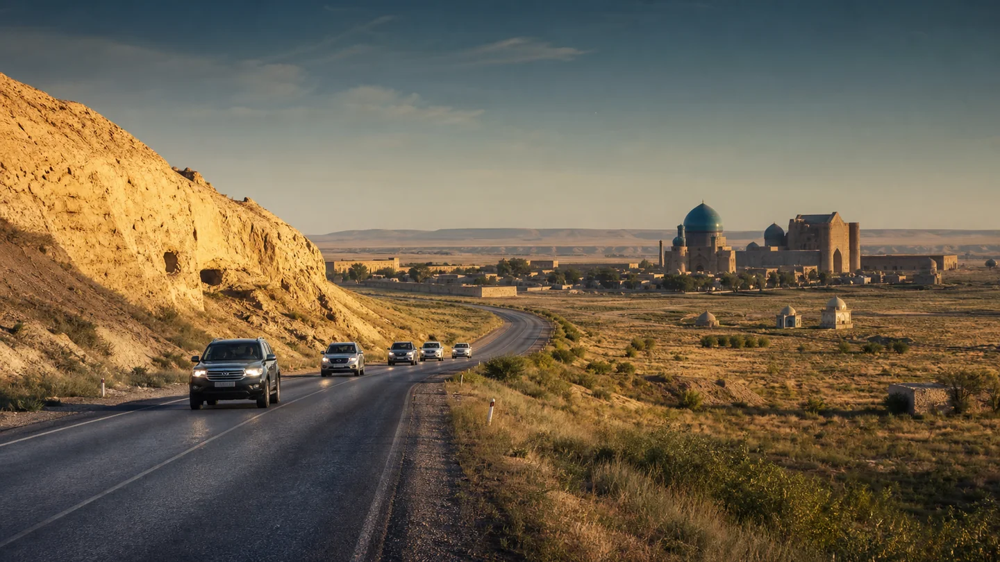
На 2027 год обозначена подготовка международной маршрутной программы через Казахстан; это план, а не завершённое достижение.
Сферы международного сотрудничества
Research & briefings
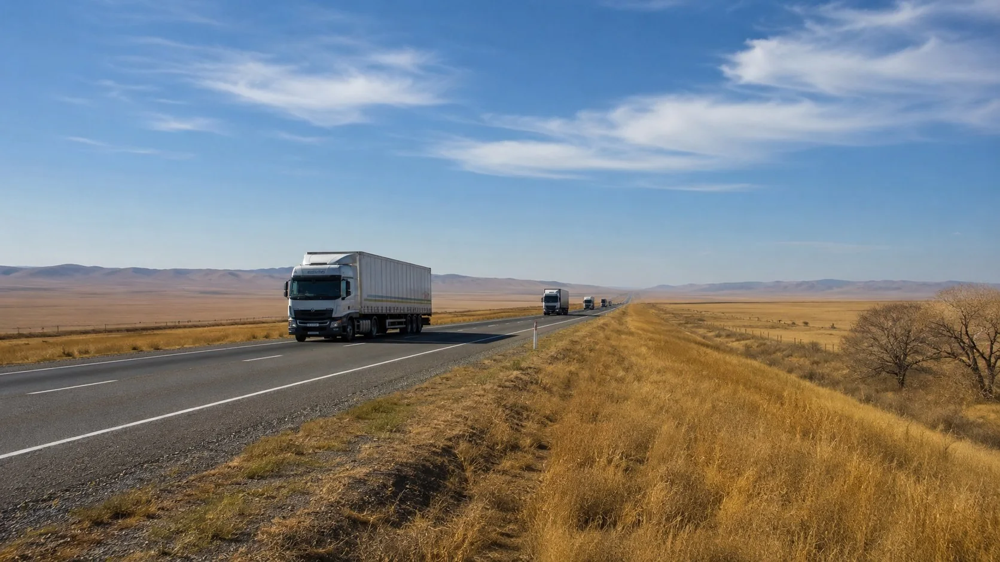
Стратегический обзор
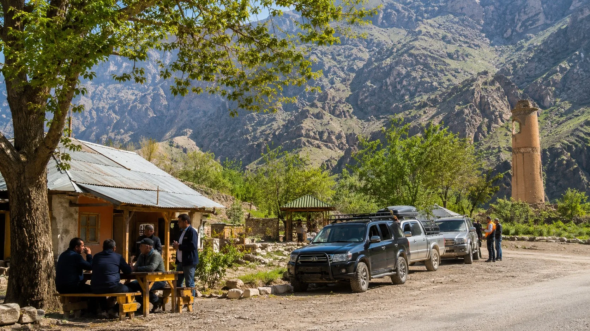
МВУ · Mobility briefing